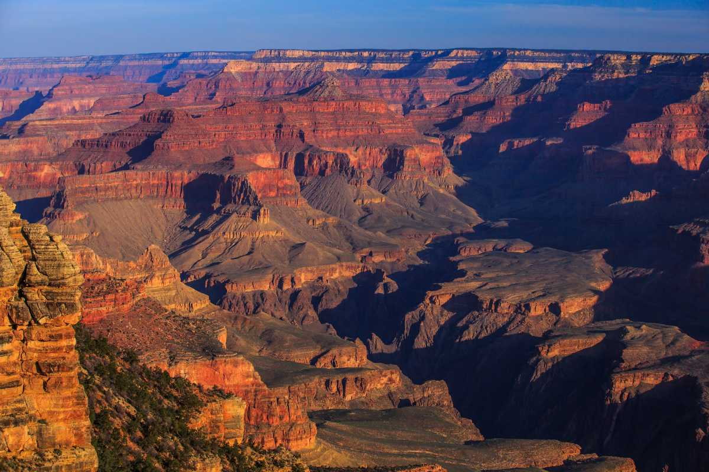

PARIS, FRANCE - City of Lights
Paris needs no formal introduction,
synonymous with culture, architecture, food and fashion.
French capital makes it the dream destination for many.
The mesmerizing wrought-iron spire of the Eiffel Tower
piercing the skyline, the Arc de Triomphe, lamp lit bridges
spanning the Seine.

COLOSSEUM, ROME
This was originally called the Flavian Amphitheatre and was
mostly used as public entertainment arena. The Colosseum is
one of the most famous attractions in Rome and is where most
gladiatorial fights took place. The Colosseum is a testament
to the ingenuity of the builders, having stood the test of time.

LONDON
Standing on the Thames River, London is the capital of
England as well as the most populous city in Great Britain.
The city is a confluence of the old and the new and is one
of the top tourist destinations in the world. London and the City of Westminster together known as Greater London.

MACHU PICCHU, PERU
One of the most recently discovered ruins, the Incan ruins
of Machu Picchu continue to astound historians, archaeologists
and historical enthusiasts alike. A mystery of its real
purpose surrounds the place and historians till date
continue to debate on the matter

GRAND CANYON
Yellowstone's Grand Canyon is one of the most iconic sites in
the region, providing several stunning vistas as you go along.
This almost 40 km long canyon is a large and the most famous
canyon in Yellowstone. The canyon's beautiful shades of
colours are an iconic part of Yellowstone.